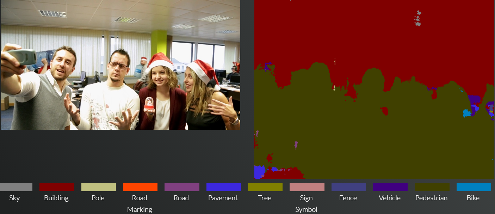

<div id="starterStyle">
  <div class="container-fluid">

    <div class="initGap"></div>


    <div ng-if="firstView">

      <div class="text-center" style="margin-top: 10%">
        <button class="w3-btn w3-tag w3-theme-action" id="processButton" ng-click="startProcess()">
          Procesar vídeo</button>
      </div>

    </div>

    <div ng-if="secondView">
      <p class="text-center">Por favor, espera mientras procesamos el vídeo...</p>
      <div class="loader"></div>
    </div>

    <div ng-if="thirdView" class="text-center">

      <ul class="nav nav-tabs" style="font-size: 110%">
        <li class="active"><a data-toggle="tab" href="#description">Análisis</a></li>
        <li><a data-toggle="tab" href="#filters">Filtros</a></li>
        <li><a data-toggle="tab" href="#segmentation">Segmentación</a></li>
        <li><a data-toggle="tab" href="#search">Búsqueda</a></li>
      </ul>


      <div class="tab-content">
        <div id="description" class="tab-pane fade in active">
          <h3>Visualiza las analíticas del vídeo</h3>
          <description></description>
        </div>
        <div id="filters" class="tab-pane fade">
          <h3>Diviértete mezclando filtros</h3>
          <filters></filters>
        </div>
        <div id="segmentation" class="tab-pane fade">
          <h3>Visualiza la segmentación semántica del vídeo</h3>
          
        </div>
        <div id="search" class="tab-pane fade">
          <h3>Búsca por metadatos</h3>
          <search></search>
        </div>
      </div>
    </div>

  </div>
</div>
